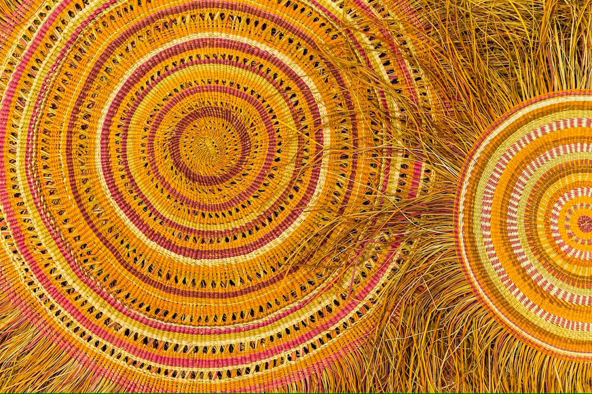

1A place to begin
Welcome. My name is Edgardo Civallero. I am a librarian, archivist, writer, researcher, musician, and naturalist. My work connects knowledge systems, cultural memory, the musical instruments of Latin America, and ecology. I write from Quisquiza, among the mist, cloud forest, and páramo of Cundinamarca, Colombia, where I also care for and restore native Andean forest.
For more than twenty-five years, I have written books, essays, chronicles, and scholarly work; designed semantic and documentary infrastructures; and worked with libraries, archives, museums, scientific collections, and communities across Latin America. My projects bring together classification, memory, sound, territory, and living systems, with particular attention to forms of knowledge that conventional institutions fragment, silence, or fail to recognize.
2Four paths through my work
Writing and research
For editors, publishers, academic readers, and general audiences.
Books, scholarly articles, essays, chronicles, fiction, current projects, and commissioned writing.
Explore publicationsLibraries, archives, and knowledge systems
For universities, libraries, archives, museums, NGOs, and consulting partners.
Knowledge organization, classification, metadata, semantic architecture, community archives, documentary systems, lectures, workshops, and advisory work.
Visit Tela de ArañaMusic and musical instruments
For listeners, musicians, museums, festivals, researchers, and cultural organizations.
through Estudio paramuno, I compose, perform, and record original music using traditional, handmade, and experimental instruments. And through Instrumentarium, I research musical instruments worldwide, design the MusIC classification system, and share publications, exhibitions, and public programs.
Arts, fiction, and making
For readers, artists, and collaborators interested in creative and material practices.
Fiction, photography, illustration, puppetry, instrument making, graphic design, and experiments with materials and objects. These practices come together in Estudio paramuno, my creative atelier in Quisquiza.
Explore Estudio paramuno3Last Threads

Life Without Sunlight
Published November 24, 2026
My latest post in my blog Chronicles of a biblio-naturalist, "Life Without Sunlight," explores hydrothermal vent ecosystems and their implications for the design of resilient knowledge infrastructures. Drawing on chemosynthesis, the symbiotic relationships of giant tubeworms, and the ecological dependencies of deep-sea communities, it examines how libraries, archives, and community-based documentary initiatives might reorganize around alternative sources of support, develop new organizational structures, and sustain their activities when conventional institutional resources are unavailable.
4Chronicles of Things Made
A log of recent writings, sounds, and gestures
Published November 15, 2026
Four new pieces appeared between November 2 and November 15, 2026, across different series on the site.
How Indigenous Knowledge Entered the Archive examines how Indigenous materials entered libraries, archives, and museums through missionary documentation, scientific collecting, institutional acquisitions, and Indigenous intellectual work. It explores how these different histories shaped the collections that survive, whose contributions were recognized, and what their provenance can reveal about the production of documentary knowledge.
Seven Times the Letter Ta explores a Batak bark manuscript from northern Sumatra in which written characters formed part of ritual procedures. Through the sevenfold repetition of the syllable ta, it examines how writing could function as an element of action rather than simply a means of recording information, and what a surviving manuscript can reveal about knowledge transmitted through practice.
The Bacteria That Hold the Desert Together examines how biological soil crusts, particularly the filaments and secretions of cyanobacteria, stabilize desert surfaces against erosion. It considers how similarly modest connections, such as inventories, provenance records, and documented responsibilities, can help protect fragile archival collections without replacing the institutional resources required for their long-term preservation.
Finally, From Quisquiza | Acoustic Field reflects on birdsong, running water, wind, and acoustic masking in the high-Andean cloud forest. It explores the difference between sounds that are absent, sounds that fail to reach us, and sounds that remain unheard, using these distinctions to examine how archives and knowledge institutions privilege certain voices while overlooking others, even when their testimony has been recorded.
5Recently published
Recent books, articles, and other publications arising from my work on knowledge and memory, libraries and archives, music, and ecology.
Not All Memory Wants to Be Preserved: Refusal, Withholding, and the Temporal Sovereignty of Memory
An examination of the assumption that all memory should be preserved, and of the harms that preservation can cause when it disregards secrecy, refusal, or cultural authority. Drawing on Indigenous knowledge systems, oral traditions, and archival theory, the article develops concepts including epistemic withholding, custodial silence, and temporal sovereignty, proposing conditional custodianship as a framework for respecting the right of memory to fade, withdraw, or disappear.
El territorio como documento: Repensar los archivos desde una geoética de la memoria
A proposal to understand territory as a document and a living archive of ecological, historical, and cultural memory. The article develops the concept of a geoethics of memory and questions documentary practices that separate knowledge from its territorial contexts, proposing approaches to preservation grounded in responsibility toward the places, relationships, and communities that sustain that memory.
When Music Leaves No Objects: Yámana Vocal Practice and the Archival Bias Toward Instruments
An examination of how Yámana vocal practice exposes the object bias of archives, museums, and organological taxonomies. Focusing on a musical tradition centered on voice rather than instruments, the article develops a typology of absence and asks what preservation systems fail to collect, classify, or hear.
An Architecture of Vanishing: Toward a Protocol of Archival Disappearance
A proposal for treating disappearance, withdrawal, opacity, and finite duration as legitimate forms of archival care. The article develops temporal, spatial, relational, semantic, and material protocols through which archives may protect memory by allowing it to recede, transform, or end.
Fabricating Authenticity: Embera Nemboro Masks, Heritage Desire, and Metadata Fictions in Panama
An examination of how recently developed Embera basketry masks came to be presented as ancient ritual objects, and how markets, museums, and metadata can transform uncertain histories into apparently stable traditions.
6Collected Texts, Sounds & Traces
Books, articles, essays, chronicles, recordings, and earlier publications are gathered in a structured archive tracing my work across libraries, archives, knowledge systems, cultural memory, sound, ecology, and territory.
7Invitations and collaborations
I am available for commissioned essays and chronicles, book projects, lectures, workshops, exhibitions, advisory work, research collaborations, and public programs related to libraries, archives, cultural memory, traditional musical instruments, semantic infrastructure, ecology, and situated knowledge.